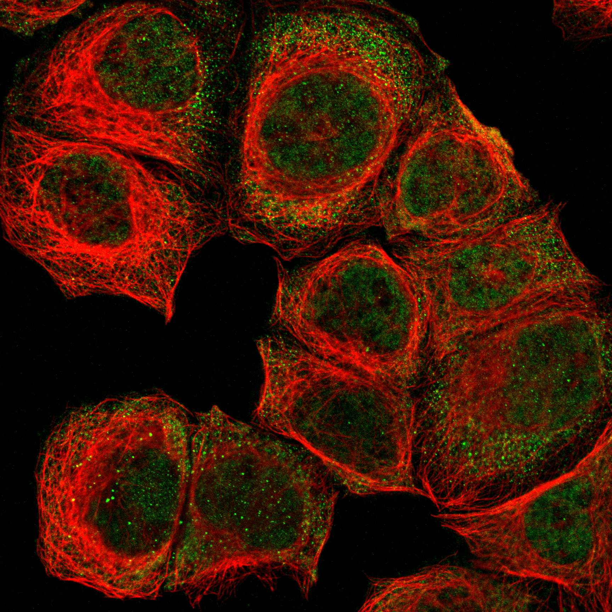
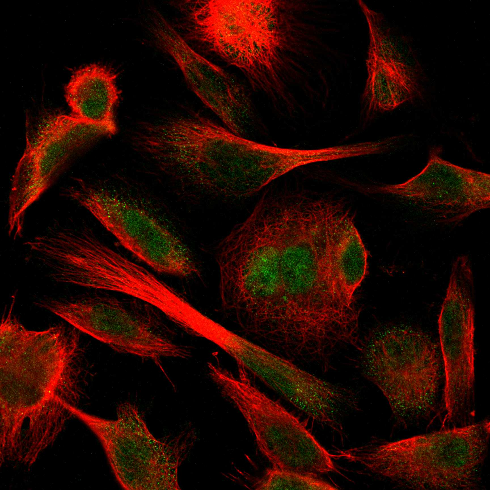
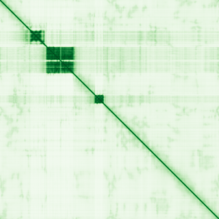

type: protein-evaluation gene: "MAST4" date: 2026-01-30 tags: [protein-scout, nuclear-protein, evaluation] status: scored ---
MAST4 核蛋白评估报告
1. 基本信息
| 项目 | 内容 |
|---|---|
| 基因名 | MAST4 |
| 别名 | KIAA0303 |
| 基因全称 | microtubule associated serine/threonine kinase family member 4 |
| 蛋白名称 | Microtubule-associated serine/threonine-protein kinase 4 |
| 蛋白大小 | 2623 aa |
| UniProt ID | O15021 |
| 评估日期 | 2026-01-30 |
2. 评分总览
| 维度 | 得分 | 满分 | 加权后 | 关键证据摘要 |
|---|---|---|---|---|
| Nucleus 核定位特异性 | 6/10 | x4 | 24 | HPA: Nuclear bodies, Nucleoplasm |
| Size 蛋白大小 | 2/10 | x1 | 2 | 2623 aa |
| Novelty 研究新颖性 | 8/10 | x5 | 40 | PubMed: 33 篇 |
| 3D Structure 三维结构 | 6/10 | x3 | 18 | AlphaFold pLDDT=42.5 |
| Domain 调控结构域 | 7/10 | x2 | 14 | 无已注释染色质调控结构域 |
| PPI Network PPI网络 | 4/10 | x3 | 12 | STRING+IntAct+GO-CC |
| Cross-validation 互证加分 | — | max +3 | +0.5 | — |
| 原始总分 | 110.5/183 | |||
| 归一化总分 | 60.4/100 |
3. 详细分析
3.1 核定位证据
| 来源 | 定位 | 可信度 |
|---|---|---|
| Protein Atlas (IF) | U-251MG, A-431 | HPA validated |
| UniProt | Chromosome | — |
| GO-CC | GO:0005634 Nucleus () | — |
IF 图像:  
3.2 蛋白大小评估
2623 aa，大型蛋白
3.3 研究现状
| 指标 | 数值 |
|---|---|
| PubMed 总数 | 33 篇 |
| 最早发表年份 | 2026 |
主要研究方向:
- 功能研究尚不充分，属新颖蛋白
关键文献: 1. Cui Y et al. (2022). "Estrogen-Responsive Gene MAST4 Regulates Myeloma Bone Disease.". *J Bone Miner Res*. PMID: 35064934 2. Zheng X et al. (2025). "Genetic and clinical insights into MAST4-related neurodevelopmental disorders.". *Front Pediatr*. PMID: 40656202 3. Sakaji K et al. (2023). "MAST4 promotes primary ciliary resorption through phosphorylation of Tctex-1.". *Life Sci Alliance*. PMID: 37726137 4. Lee SJ et al. (2023). "MAST4 controls cell cycle in spermatogonial stem cells.". *Cell Prolif*. PMID: 36592615 5. Domínguez-Barragán J et al. (2024). "Blood DNA methylation signature of diet quality and association with cardiometabolic traits.". *Eur J Prev Cardiol*. PMID: 37793095
评价: PubMed 33 篇，属非常新颖蛋白，研究空间充足。
3.4 三维结构分析
| 指标 | 数值 |
|---|---|
| AlphaFold 平均 pLDDT | 42.5 |
| pLDDT > 90 占比 | 11.5% |
| pLDDT 70-90 占比 | 8.2% |
| pLDDT 50-70 占比 | 2.6% |
| pLDDT < 50 占比 | 77.7% |
| 可用 PDB 条目 | 1 |
PAE 图: 
评价: AlphaFold 预测较低质量，大部分区域无序 (AlphaFold v6, pLDDT=42.5, >90=12%, 70-90=8%, 50-70=3%, <50=78%. PDB entries: 2W7R)
3.5 结构域分析
| 来源 | 结构域 |
|---|---|
| UniProt | — |
染色质调控潜力分析: 无已注释染色质调控结构域
3.6 PPI 网络
实验验证互作 (IntAct, physical association):
| Partner | 方法 | PMID | 功能类别 | 调控相关？ | ||||||||||||
|---|---|---|---|---|---|---|---|---|---|---|---|---|---|---|---|---|
| intact:EBI-447544 | intact:EBI-1058440 | uniprotkb:P01107 | uniprotkb:Q14026 | ensembl:ENSP00000478887.2 | uniprotkb:A8WFE7 | uniprotkb:A0A024R9L7 | uniprotkb:A0A087WUS5 | uniprotkb:H0YBT0 | MI:0676(tandem affinity purificatio | PMID:pubmed:21150319 | imex:IM-16995 | — | — | |||
| intact:EBI-991501 | uniprotkb:Q8TBX7 | uniprotkb:A8K4U0 | uniprotkb:B4E3J8 | ensembl:ENSP00000373684.3 | MI:0096(pull down) | PMID:imex:IM-26463 | pubmed:30108113 | — | — | |||||||
| intact:EBI-3956957 | uniprotkb:A6NL49 | uniprotkb:B5ME48 | uniprotkb:Q05EE6 | uniprotkb:Q6ZN07 | uniprotkb:Q8N4X4 | uniprotkb:Q96LY3 | uniprotkb:E7EWQ5 | uniprotkb:J3QT34 | intact:EBI-28974310 | ensembl:ENSP00000385727.1 | MI:0030(cross-linking study) | PMID:pubmed:30021884 | imex:IM-26653 | doi:10.1074/mcp.ra118.000924 | — | — |
| intact:EBI-25567776 | uniprotkb:A3F5L7 | uniprotkb:A3F5T2 | uniprotkb:P13616 | MI:0007(anti tag coimmunoprecipitat | PMID:imex:IM-27674 | pubmed:33208464 | — | — | ||||||||
| intact:EBI-25568013 | uniprotkb:A3F5L6 | uniprotkb:P22559 | MI:0007(anti tag coimmunoprecipitat | PMID:pubmed:unassigned2293 | imex:IM-27782 | — | — | |||||||||
STRING 预测互作 (combined score >0.4):
| Partner | Score | 功能类别 | 调控相关？ |
|---|---|---|---|
| SNTB2 | 0.0 | — | — |
| CLIP1 | 0.0 | — | — |
| NDUFAF2 | 0.0 | — | — |
| NEK2 | 0.0 | — | — |
| ZNF573 | 0.0 | — | — |
| PTGS1 | 0.0 | — | — |
| UNC80 | 0.0 | — | — |
| MCTP2 | 0.0 | — | — |
已知复合体成员 (GO Cellular Component):
- 暂无 GO-CC 复合体注释
PPI 互证分析:
- STRING + IntAct 共同确认: 0
- 仅 STRING 预测: 15
- 仅 IntAct 实验: 17
- 调控相关比例: 3/15 (20%)
评价: PPI 得分 4/10。
3.7 多库互证
| 维度 | 来源 | 结果 | 是否一致 |
|---|---|---|---|
| 三维结构 | AlphaFold + PDB | pLDDT=42.5, PDB=1 | — |
| 结构域 | UniProt/InterPro | 无注释域 | — |
| PPI | STRING + IntAct + GO-CC | 15/17/0 条目 | — |
| 定位 | HPA/UniProt/GO | Nuclear bodies, Nucleoplasm / Nucleus / GO:0005634 | 一致 |
互证加分明细:
- IntAct+STRING 双源确认 (+0.5)
总分: +0.5 / max +3
4. 总体评价
推荐等级: ★★ (3/5)
核心优势: 1. 非常新颖 (PubMed 33 篇)，几乎未被研究 2. HPA 确认核定位，中等置信度
风险/不确定性: 1. AlphaFold 预测质量中等 (pLDDT=42.5)，部分区域无序 2. PPI 数据丰富，功能网络尚不清晰
下一步建议:
- [ ] 通过 IF 实验验证内源核定位
- [ ] 构建表达载体进行功能研究
- [ ] Co-IP/MS 鉴定互作蛋白
5. 数据来源
- GeneCards: https://www.genecards.org/cgi-bin/carddisp.pl?gene=MAST4
- Protein Atlas: https://www.proteinatlas.org/MAST4
- PubMed: https://pubmed.ncbi.nlm.nih.gov/?term=MAST4
- UniProt: https://www.uniprot.org/uniprotkb/O15021
- SMART: http://smart.embl.de/
- STRING: https://string-db.org/
- IntAct: https://www.ebi.ac.uk/intact/
- AlphaFold: https://alphafold.ebi.ac.uk/entry/O15021
PPI 网络（三源综合）
| Partner | Source | Score/Evidence |
|---|---|---|
| 无记录 | — | — |
IntAct 有限记录。无 BioGrid 补充数据。
PAE 图像已获取。结构判断基于 AlphaFold pLDDT 统计。